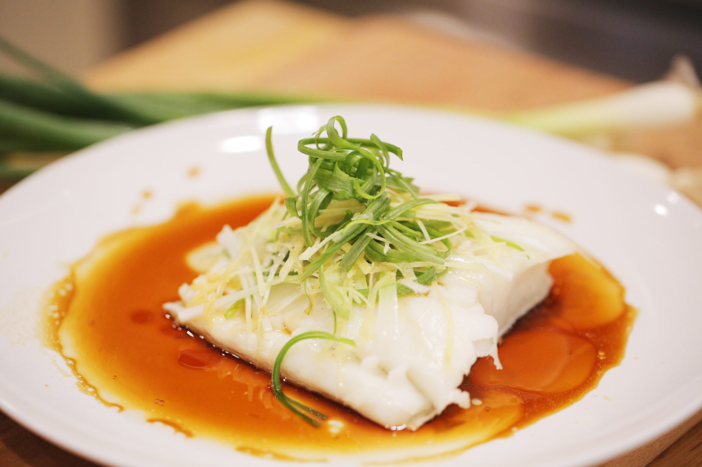

Steamed Fish Recipe

Description
Chinese teamed fish is a super fast, yet super delicious dish to make. Originated from
China, it's a dish that has a soft and juicy fish, paired with a slightly sweet and "ginger-y"
sauce. You and the family will for sure love this dish!
Ingredients
- 1 pc of white fish
- 2 green onions
- 1/4 julienned ginger
- 2 tbsp sake
- 2 tbsp soy sauce
- 1 tbsp sugar
- 4 tbsp water
- 1/4 ginger (peeled)
- 1 tbsp neutral oil
Steps
- Prepare your fish by pouring a few drops of sake over it for 5-10 minutes to remove the fishy taste.
- Prepare your steamer and make a bed with a couple slices of green onions and ginger on
a plate, and then place the fish over it. Place in the steamer and cook for 10 minutes.
- In a small pan, add the sake, soy sauce, water, and sugar and cook on medium heat until
the sugar dissolves.
- Once the fish finishes cooking, place on a clean plate and pour sauce over it.
- On a small pan, sauté julienned ginger with neutral oil, and remove immediately once it turns
golden brown.
- Pour ginger oil over the fish and sprinkle green onions as garnish.
- Serve and enjoy!!